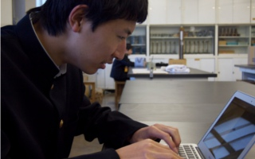
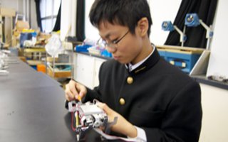

物理部の活動の特色
物理部での班分け
海城物理部では活動の際に四つの班に分けています。しかし、我々は班として固く分類するのではなく、部員が積極的に取り組めるよう掛け持ちできる「自由な班」づくりを目指しています。
自由な四つつの班
では、なぜ班を作るのか。答えは簡単です。一つは活動内容の整理、もう一つは班による知識の共有です。新しい活動に取り組む時は誰もが無知。その班に入っていれば自分ができることが見えてくる、と部員の積極的な挑戦を支援できると考えます。
実際の班には「ロボット班」「ソフトウェア班」「マイコン班」「電子工作班」があります。詳しくは左のメニューから詳細へどうぞ。
実際の班には「ロボット班」「ソフトウェア班」「マイコン班」「電子工作班」があります。詳しくは左のメニューから詳細へどうぞ。

部員同士の活動内容の理解
部内発表会
海城物理部では定期テストの後にその間にやったことを部内で発表する「部内発表会」を導入しています。
これは昨年三学期に取り入れ始めたものでまだ試験的段階ではありますが、部員がそれぞれどのような活動をしているのか理解を深めることを目的に設けられています。
これは昨年三学期に取り入れ始めたものでまだ試験的段階ではありますが、部員がそれぞれどのような活動をしているのか理解を深めることを目的に設けられています。
